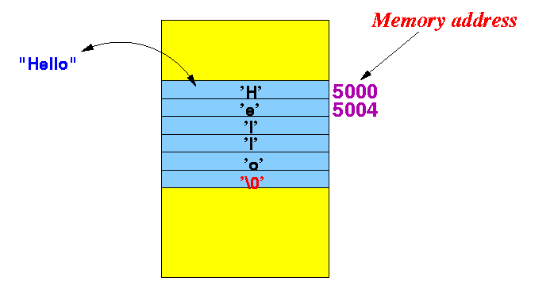
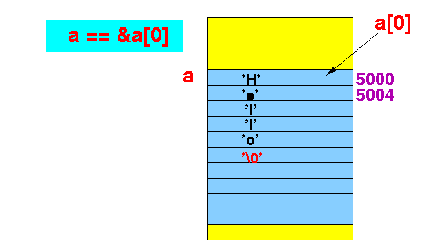

- Strings in C
- String = a
sequence of
characters
- Unlike Java,
the C programming language
does not
have a String
data type
- A string (= sequence of characters) in C is simply stored in an array of char
- String = a
sequence of
characters
- There are 2 representation methods
of strings:
- The (location +
length) method
- Java uses this method
- The (location +
sentinel) method
- C uses this method
- The (location +
length) method
- Representing a
string in C:
- A string is stored in memory using consecutive memory cells and the string is terminated by the sentinel '\0' (known as the NUL character).
Example: the string "Hello" is represented as follows:
 Note:
- The characters
(e.g. 'H', 'e', ...) are
encoded using the
ASCII code
--- you learned this in CS170 !
- So 'H' is nothing more than a small (1 byte) integer !!!
- Conversion character for
a string:
%s conversion character in printf for a string
- Example:
int main(int argc, char *argv[]) { printf("Print the string `%s' here\n", "Hello" ); }Result:
Print the string `Hello' here
- Example Program:
(Demo above code)

- Prog file: click here
How to run the program:
- Right click on link(s) and
save in a scratch directory
- To compile: gcc string1.c
- To run: ./a.out
- String variables in C
- A string variable in
C is just an
array of char !!!
- An ASCII character code is
stored in the array element at the
character position
- The end of the string is marked by the sentinel character '\0' (NUL) (which has the ASCII code value 0)
- An ASCII character code is
stored in the array element at the
character position
- A string variable in
C is just an
array of char !!!
- Example: using a string variable
the hard way
int main(int argc, char *argv[]) { char a[10] = { 'H', 'e', 'l', 'l', 'o', '\0' } ; // String variable // Don't forget the sentinel '\0' // that ends the string ! printf( "sizeof(a) = %d\n", sizeof(a) ); printf( "String a = %s\n", &a[0] ); // Print string starting at a[0] printf( "Strange string: %s\n", &a[3] ); // Print string starting at a[3] }Output:
sizeof(a) = 10 String a = Hello Strange string: lo
Explanation:
The string in array a[] is as follows: a[0] a[3] a[5] +---+---+---+---+---+---+---+---+---+---+ | H | e | l | l | o | \0| ? | ? | ? | ? | +---+---+---+---+---+---+---+---+---+---+
The string starting at location a[0] is: a[0] a[3] +---+---+---+---+---+---+---+---+---+---+ | H | e | l | l | o | \0| ? | ? | ? | ? | +---+---+---+---+---+---+---+---+---+---+ So the program prints Hello
The string starting at location a[3] is: a[0] a[3] +---+---+---+---+---+---+---+---+---+---+ | H | e | l | l | o | \0| ? | ? | ? | ? | +---+---+---+---+---+---+---+---+---+---+ So the program prints loNote:
- Because the sentinal '\0' marks the end of a string, the data inside a[6], a[7], a[8] and a[9] are ignored by the printf() function.
- Example Program:
(Demo above code)
- Prog file: click here
How to run the program:
- Right click on link(s) and
save in a scratch directory
- To compile: gcc string2.c
- To run: ./a.out
- Short hand syntax:
char a[10] = "Hello";
is short hand for: char a[10] = { 'H', 'e', 'l', 'l', 'o', '\0' } ; - More short hand syntax:
char a[] = "Hello";
is short hand for: char a[6] = { 'H', 'e', 'l', 'l', 'o', '\0' } ; (Size of the array is determined by the number of characters in the string (including the '\0' char !) )
- Example:
int main(int argc, char *argv[]) { char a[10] = "Hello"; printf( "sizeof(a) = %d\n", sizeof(a) ); printf( "String a = %s\n", &a[0] ); printf( "Strange string: %s\n", &a[3] ); }
- Example Program:
(Demo above code)
- Prog file: click here
How to run the program:
- Right click on link(s) and
save in a scratch directory
- To compile: gcc string3.c
- To run: ./a.out
- We have just seen that a
string in C is stored
as an array of characters
- Fact:
- A string in C can also be declared as a value/variable of the type char * (i.e., a point to a char typed variable).
Reason:
- If a is
defined as an array of characters:
char a[10] = "Hello";then a is the address of the first element in the array: a == &a[0]

- The variable a[0]
has the type char !!!
Therefore:
- The data type of the expression &a[0] is: (char *)
In other words:
- The data type of the expression a is also: (char *) !!!!
- Example:
function with a string variable
#include <stdio.h> void print1( char x[] ) // Normal way to express array of string { printf( "print1: string x = %s\n", x); } void print2( char *x ) // Alternate way to express array of string { printf( "print2: string x = %s\n", x); } int main(int argc, char *argv[]) { char a[10] = "Hello"; // String print1( a ); print2( a ); }
- Example Program:
(Demo above code)
- Prog file: click here
How to run the program:
- Right click on link and
save in a scratch directory
- To compile: gcc string4.c
- To run: ./a.out